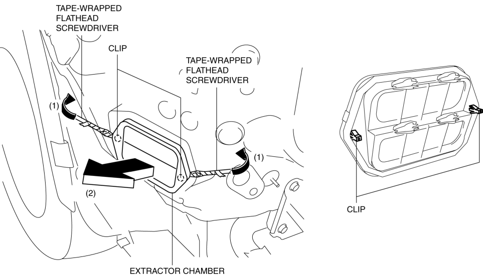

< Previous
Next >
2014 -
Mazda6 -
Body and Accessories
EXTRACTOR CHAMBER REMOVAL/INSTALLATION
1. Disconnect the negative battery cable. (See NEGATIVE BATTERY CABLE DISCONNECTION/CONNECTION [SKYACTIV-G 2.5].)
2. Remove the following parts: a. Rear splash shield (See SPLASH SHIELD REMOVAL/INSTALLATION.)
b. Rear combination light (See REAR COMBINATION LIGHT REMOVAL/INSTALLATION.)
c. Rear bumper (See REAR BUMPER REMOVAL/INSTALLATION.)
3. Insert a tape-wrapped flathead screwdriver shown in the figure and remove clips in the direction of arrow (1).

4. Remove the extractor chamber in the direction of arrow (2).
5. Install in the reverse order of removal.
< Previous
Next >
© 2012 Mazda North American Operations, U.S.A.